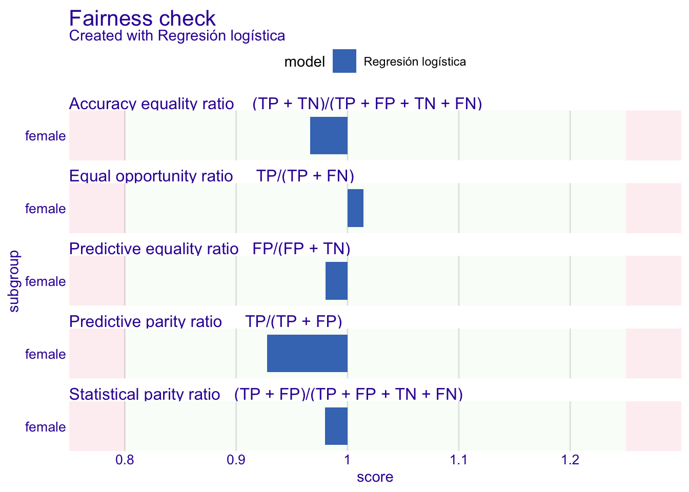
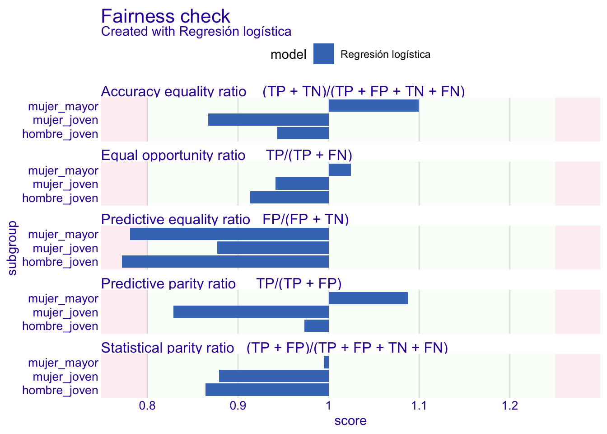

library(ellmer)
library(quallmer)
library(tidyverse)
set.seed(2026)
knitr::opts_chunk$set(cache = TRUE, message = FALSE, warning = FALSE)
options(cli.progress_show_after = Inf)
consultas <- read_csv("datos/consultas_salud_mental.csv", show_col_types = FALSE)
MODELO_LOCAL <- "ollama/granite4.1:3b"Tarea 9: Modelos locales y auditoría de equidad – Respuestas
IA para Científicos Sociales - UCU
1 Instrucciones
Esta es la clave de respuestas de la Tarea 9. A diferencia de las tareas del Día 4, acá todos los bloques corren de verdad al renderizar: el modelo es local y no gasta peticiones de ninguna API. Hace falta Ollama corriendo con granite4.1:3b descargado, y los paquetes quallmer, fairmodels y DALEX. Los bloques con el LLM usan caché de knitr para que los renders siguientes sean rápidos. Las codificaciones a mano son ejemplos: cada estudiante puede tener juicios distintos.
1.1 Configuración
2 Codificación con un modelo local
2.1 Pregunta 1: Diseñar un codebook nominal
codebook_motivos <- qlm_codebook(
name = "motivos_no_consulta",
instructions = "Leé la respuesta de una encuesta sobre salud mental. La persona explica
por qué no consultó (o abandonó la consulta) con un profesional. Clasificá el MOTIVO
PRINCIPAL en una de estas categorías:
- costo: no puede pagar las sesiones, la cobertura no alcanza o el dinero es el obstáculo central
- estigma: teme el juicio de otros (familia, trabajo, vecinos) o siente vergüenza de estar en tratamiento
- desconfianza: no cree que la terapia o los profesionales sirvan, por experiencia propia o ajena
- falta_tiempo: el horario o la carga de trabajo y cuidados le impiden asistir
- autosuficiencia: considera que puede manejar o que ya manejó el problema por su cuenta
Reglas de decisión:
1. Si menciona dinero Y tiempo, elegí el que la persona presenta como el obstáculo decisivo.
2. Si dice que resolvió o que maneja el problema por su cuenta, es 'autosuficiencia',
aunque también mencione el costo o la desconfianza.
Elegí UNA sola categoría.",
schema = type_object(
motivo = type_enum(
c("costo", "estigma", "desconfianza", "falta_tiempo", "autosuficiencia"),
"El motivo principal por el que no consultó"
),
justificacion = type_string("Una oración que justifique la categoría elegida")
),
role = "Sos un investigador experto en salud pública y encuestas de salud mental.",
levels = list(motivo = "nominal", justificacion = "nominal")
)Respuesta: las definiciones tienen que ser operacionales (qué cuenta y qué no cuenta como cada categoría), y las reglas de decisión resuelven por anticipado los casos límite, igual que en un codebook para asistentes humanos. La regla 2, por ejemplo, decide qué hacer con relatos como el S18, que menciona el costo pero termina contando que manejó el problema solo. Marcar motivo como "nominal" le dice a quallmer que valide con accuracy y kappa, no con correlaciones.
2.2 Pregunta 2: Humano contra humano
filas <- c(2, 4, 7, 12, 15, 18)
# Codificación propia, hecha leyendo los textos SIN mirar motivo_humano
# (estos códigos son un ejemplo; los suyos pueden diferir)
mis_codigos <- c("estigma", "desconfianza", "costo", "costo", "falta_tiempo", "costo")
comparacion_humana <- tibble(
id = consultas$id[filas],
mio = mis_codigos,
equipo = consultas$motivo_humano[filas]
)
comparacion_humana# A tibble: 6 × 3
id mio equipo
<chr> <chr> <chr>
1 S02 estigma estigma
2 S04 desconfianza desconfianza
3 S07 costo costo
4 S12 costo costo
5 S15 falta_tiempo falta_tiempo
6 S18 costo autosuficienciamean(comparacion_humana$mio == comparacion_humana$equipo)[1] 0.8333333Respuesta: en nuestro ejemplo coincidimos en cinco de seis: el desacuerdo es el S18, que nosotros codificamos costo y el equipo autosuficiencia. No es un error de nadie: el relato menciona los dos motivos y la frontera es genuinamente ambigua. Ese es el punto de la pregunta: si dos humanos entrenados no logran acuerdo perfecto, no tiene sentido exigírselo a un LLM. El acuerdo entre humanos marca el techo realista contra el que se evalúa al modelo, y es la razón por la que los proyectos serios reportan confiabilidad entre codificadores antes de automatizar nada.
2.3 Pregunta 3: Codificar con el modelo local y validar
codificado <- qlm_code(
consultas$texto,
codebook_motivos,
model = MODELO_LOCAL,
max_active = 1,
params = params(temperature = 0),
name = "granite_local"
)
gold <- qlm_humancoded(
tibble(.id = seq_len(nrow(consultas)), motivo = consultas$motivo_humano),
name = "humano",
codebook = codebook_motivos
)
validacion <- qlm_validate(codificado, gold = gold, by = "motivo", level = "nominal")
as_tibble(validacion) |> select(measure, value)# A tibble: 5 × 2
measure value
<chr> <dbl>
1 accuracy 0.833
2 precision 0.843
3 recall 0.833
4 f1 0.825
5 kappa 0.792Respuesta: los datos nunca salieron de la máquina: cada texto viajó al servidor local de Ollama y volvió con su categoría. Con cinco categorías, adivinar al azar daría un 20% de aciertos, así que el kappa (acuerdo corregido por azar) es la métrica honesta. Si supera el umbral de 0,7 del curso, el modelo local es un codificador utilizable; conviene además mirar la pregunta 4 antes de declararlo confiable, porque la accuracy global puede esconder errores concentrados en una frontera.
2.4 Pregunta 4: La tabla de confusión
tabla_confusion <- as_tibble(codificado) |>
mutate(gold = consultas$motivo_humano) |>
count(motivo, gold)
tabla_confusion |> arrange(desc(n))# A tibble: 8 × 3
motivo gold n
<fct> <chr> <int>
1 costo costo 4
2 estigma estigma 3
3 falta_tiempo falta_tiempo 3
4 autosuficiencia autosuficiencia 3
5 desconfianza desconfianza 2
6 costo autosuficiencia 1
7 desconfianza estigma 1
8 falta_tiempo desconfianza 1# Sólo los desacuerdos
tabla_confusion |> filter(motivo != gold)# A tibble: 3 × 3
motivo gold n
<fct> <chr> <int>
1 costo autosuficiencia 1
2 desconfianza estigma 1
3 falta_tiempo desconfianza 1codebook_motivos_v2 <- qlm_codebook(
name = "motivos_no_consulta_v2",
instructions = "Leé la respuesta de una encuesta sobre salud mental. La persona explica
por qué no consultó (o abandonó la consulta) con un profesional. Clasificá el MOTIVO
PRINCIPAL en una de estas categorías:
- costo: no puede pagar las sesiones, la cobertura no alcanza o el dinero es el obstáculo central
- estigma: teme el juicio de otros (familia, trabajo, vecinos) o siente vergüenza de estar en tratamiento
- desconfianza: no cree que la terapia o los profesionales sirvan, por experiencia propia o ajena
- falta_tiempo: el horario o la carga de trabajo y cuidados le impiden asistir
- autosuficiencia: considera que puede manejar o que ya manejó el problema por su cuenta
Reglas de decisión:
1. Si menciona dinero Y tiempo, elegí el que la persona presenta como el obstáculo decisivo.
2. Si dice que resolvió o que maneja el problema por su cuenta, es 'autosuficiencia',
aunque también mencione el costo o la desconfianza.
3. 'desconfianza' requiere un juicio sobre la utilidad de la terapia o de los profesionales;
si el problema es el juicio de OTRAS personas (familia, trabajo, vecinos), es 'estigma'.
Elegí UNA sola categoría.",
schema = type_object(
motivo = type_enum(
c("costo", "estigma", "desconfianza", "falta_tiempo", "autosuficiencia"),
"El motivo principal por el que no consultó"
),
justificacion = type_string("Una oración que justifique la categoría elegida")
),
role = "Sos un investigador experto en salud pública y encuestas de salud mental.",
levels = list(motivo = "nominal", justificacion = "nominal")
)
codificado_v2 <- qlm_code(
consultas$texto,
codebook_motivos_v2,
model = MODELO_LOCAL,
max_active = 1,
params = params(temperature = 0),
name = "granite_local_v2"
)
validacion_v2 <- qlm_validate(codificado_v2, gold = gold, by = "motivo", level = "nominal")
as_tibble(validacion_v2) |> select(measure, value)# A tibble: 5 × 2
measure value
<chr> <dbl>
1 accuracy 0.889
2 precision 0.92
3 recall 0.883
4 f1 0.887
5 kappa 0.860Respuesta: la tabla de confusión convierte una lista de errores en un diagnóstico: si el modelo confunde de forma repetida un mismo par de categorías, el problema casi siempre está en el codebook, no en el modelo. La regla nueva debe atacar ese par concreto (acá usamos como ejemplo la frontera entre desconfianza y estigma: ambas hablan de razones para no ir, pero una mira a los profesionales y la otra al entorno social). Sobre la mejora, la advertencia de la pista es seria: con 18 textos cada caso vale 5,6 puntos de accuracy, así que pasar de una corrida a otra con un acierto más o menos puede ser ruido. La forma correcta de evaluar una regla es con más datos o con varias corridas, mirando también si las justificaciones citan la regla.
2.5 Pregunta 5: ¿El modelo local es determinista?
corrida_b <- qlm_replicate(codificado, name = "corrida_b")
confiabilidad <- qlm_compare(codificado, corrida_b, by = "motivo", level = "nominal")
as_tibble(confiabilidad) |> select(measure, value)# A tibble: 3 × 2
measure value
<chr> <dbl>
1 percent_agreement 1
2 alpha_nominal 1
3 kappa 1Respuesta: con temperature = 0 el modelo elige siempre el token más probable, así que el acuerdo entre corridas suele ser perfecto o casi perfecto, mucho más alto que con los modelos de la nube del Día 4 (donde además el proveedor puede cambiar el modelo sin avisar). Pero no es una garantía matemática: la aritmética de punto flotante en la GPU puede producir empates que se resuelven distinto, y actualizar Ollama o el archivo del modelo puede cambiar los resultados. Por eso la sesión 5.1 insiste en congelar y reportar la versión exacta del modelo (el digest de ollama list): la reproducibilidad viene del paquete completo (modelo fijo + temperatura 0 + codebook documentado), no de un solo parámetro.
3 Auditoría de equidad
3.1 Pregunta 6: Regresión logística y fairness_check()
library(fairmodels)
library(DALEX)
data("german", package = "fairmodels")
german <- german |> mutate(Risk_binary = ifelse(Risk == "good", 1, 0))
# Regresión logística sin Sex como predictor.
# Quitamos Risk y Sex de los datos antes de ajustar: así la fórmula no las
# menciona y predict() funciona también sobre datos que no incluyen esas columnas.
german_glm <- german |> select(-Risk, -Sex)
glm_model <- glm(Risk_binary ~ ., data = german_glm, family = binomial)
explainer_glm <- DALEX::explain(
glm_model,
data = german_glm |> select(-Risk_binary),
y = german_glm$Risk_binary,
label = "Regresión logística",
verbose = FALSE
)
fobject <- fairness_check(
explainer_glm,
protected = german$Sex,
privileged = "male",
cutoff = 0.5,
verbose = FALSE
)
fobject
Fairness check for models: Regresión logística
[32mRegresión logística passes 5/5 metrics
[39mTotal loss : 0.160018 plot(fobject)
Respuesta: igual que en el laboratorio, la regresión logística no usa Sex y aun así puede tratar distinto a los grupos, porque otras variables (monto, historial, vivienda) funcionan como proxies. La lectura es la del laboratorio: cada barra es el ratio mujer/hombre de una métrica, y la zona verde (0,8 a 1,25) es la regla del 80%. El print() del objeto dice cuántas métricas pasan; típicamente alguna queda fuera, y el teorema de imposibilidad nos recuerda que no podríamos arreglarlas todas a la vez aunque quisiéramos.
3.2 Pregunta 7: Auditoría interseccional
german <- german |>
mutate(grupo = paste(
ifelse(Sex == "male", "hombre", "mujer"),
ifelse(Age < 35, "joven", "mayor"),
sep = "_"
))
german |> count(grupo) grupo n
1 hombre_joven 335
2 hombre_mayor 355
3 mujer_joven 213
4 mujer_mayor 97fobject_int <- fairness_check(
explainer_glm,
protected = german$grupo,
privileged = "hombre_mayor",
cutoff = 0.5,
verbose = FALSE
)
fobject_int
Fairness check for models: Regresión logística
[33mRegresión logística passes 4/5 metrics
[39mTotal loss : 1.576736 plot(fobject_int)
Respuesta: ahora cada métrica se calcula para tres grupos contra el de referencia (hombre_mayor), y el gráfico muestra lo que la auditoría por sexo solo no podía mostrar: las disparidades más grandes suelen concentrarse en una intersección (en general, las mujeres jóvenes quedan peor que lo que sugiere el promedio de “las mujeres”). La lección metodológica es general: auditar por un atributo a la vez puede dar un falso aprobado, porque los promedios de cada grupo esconden a los subgrupos. El costo de la interseccionalidad es estadístico: cuantos más grupos, menos casos por celda y más ruidosas las métricas, así que conviene elegir las intersecciones con teoría y no probar todas las combinaciones posibles.
4 Reflexión
4.1 Pregunta 8: El párrafo para el comité de ética
Respuesta (ejemplo): Las respuestas que analizamos describen estados de salud mental y decisiones de tratamiento, por lo que constituyen datos sensibles en el sentido del artículo 4 de la Ley 18.331, sujetos a un régimen de protección reforzado. Por esa razón proponemos procesarlas exclusivamente en equipos del proyecto, con un modelo de lenguaje ejecutado de forma local mediante Ollama. A diferencia de una API en la nube, este diseño evita el riesgo concreto de transferir los relatos a un tercero fuera de nuestro control, donde podrían almacenarse, usarse para entrenar otros modelos o quedar expuestos en un incidente de seguridad, todo ello fuera del alcance del consentimiento que firmaron las personas participantes. Como controles adicionales, los archivos se guardarán cifrados en un equipo sin sincronización automática con servicios en la nube, los fragmentos serán seudonimizados antes de la codificación (reemplazando nombres, barrios y lugares de trabajo), y el acceso quedará limitado al equipo de investigación autorizado en este protocolo. El modelo y su versión exacta quedarán documentados para garantizar la reproducibilidad del análisis sin necesidad de volver a circular los datos. (≈170 palabras.)
4.2 Pregunta 9: Recomendación al regulador
Respuesta (ejemplo): Recomendamos exigir igualdad de oportunidades: que la tasa de verdaderos positivos sea comparable entre grupos, de modo que un buen pagador tenga la misma probabilidad de obtener crédito sea cual sea su grupo. Es la métrica que mejor captura el daño regulatorio relevante (negarle crédito a quien sí iba a pagar) y la que da incentivos correctos: el banco puede cumplirla mejorando su modelo, no repartiendo cupos. El teorema de imposibilidad obliga a ser honestos sobre lo que se pierde. Si las tasas base de buen pago difieren entre grupos, un modelo con igualdad de oportunidades no tendrá paridad demográfica (aprobará proporciones distintas por grupo) y su calibración perfecta será inalcanzable al mismo tiempo. Eso significa aceptar que las proporciones globales de aprobación puedan diferir, lo que puede perpetuar brechas históricas de acceso al crédito; un regulador que priorice cerrar esas brechas preferiría paridad demográfica, al costo de aprobar más créditos que no se pagarán en algunos grupos. La elección entre esas dos pérdidas es política y debería hacerse explícita en la norma, junto con la obligación de publicar las métricas por grupo. (≈180 palabras.)